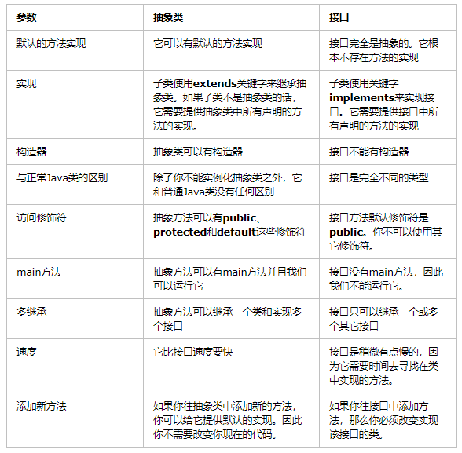

目录
接口（interface）可以说成是抽象类的一种特例，接口中的所有方法都必须是抽象的。
接口中的方法定义默认为public abstract类型，接口中的成员变量类型默认为public static final (这里需要说一点,既然一个变量被final修饰了,那么这个变量就是一个常量!!!!!变量必须初始化成常量!!!!!)
下面比较一下两者的语法区别：
- 抽象类可以有构造方法，接口中不能有构造方法。
- 抽象类中可以有普通成员变量，接口中没有普通成员变量!!!!!!!(注意重点在 普通 即 非静态 和 变量!!!!)
- 抽象类中可以包含非抽象的普通方法，接口中的所有方法必须都是抽象的，不能有非抽象的普通方法。
- 抽象类中的抽象方法的访问类型可以是public，protected和（默认类型,虽然eclipse下不报错，但应该也不行），但接口中的抽象方法只能是public类型的，并且默认即为public abstract类型。
附录一个开发中接口的代码1
2
3
4
5
6
7
8
9
10
11
12
13
14
15
16
17public interface InterfaceTest {
// static 和 final 是针对接口中的成员变量来说的.
// abstract是针对接口中的方法来说的.
public static final String str = null;
public String strr = null;// 接口中的变量默认是public static final类型的
public int i = 0;// 可以不显示的用static 和 final 来修饰这个变量.默认就是了!!!
public abstract void fireContextsChangedEvent();// 方法默认是 public abstract类型的.
public boolean checkValidParameterName(String oldParameterName, String newParameterName);
public void saveToEmf(EList contextTypeList);
}
- 抽象类中可以包含静态方法(static)，接口中不能包含静态方法.
- 抽象类和接口中都可以包含静态成员变量(static)，抽象类中的静态成员变量的访问类型可以任意，但接口中定义的变量只能是public static final类型，并且默认即为public static final类型。
- 一个类可以实现多个接口，但只能继承一个抽象类。
关于接口中定义的成员变量是常量的解释:
在interface里面的变量都是public static final 的。所以你可以这样写：
public static final int i=10;
或则
int i=10；（可以省略掉一部分）
注意在声明的时候要给变量赋予初值
解释：
首先你要弄清接口的含义.接口就是提供一种统一的’协议’,而接口中的属性也属于’协议’中的成员.它们是公共的,静态的,最终的常量.相当于全局常量.
抽象类是不’完全’的类,相当于是接口和具体类的一个中间层.即满足接口的抽象,也满足具体的实现.
如果接口可以定义变量，但是接口中的方法又都是抽象的，在接口中无法通过行为来修改属性。有的人会说了，没有关系，可以通过实现接口的对象的行为来修改接口中的属性。这当然没有问题，但是考虑这样的情况。如果接口A中有一个public访问权限的静态变量a。按照java的语义，我们可以不通过实现接口的对象来访问变量a，通过A.a = xxx;就可以改变接口中的变量a的值了。正如抽象类中是可以这样做的，那么实现接口A的所有对象也都会自动拥有这一改变后的a的值了，也就是说一个地方改变了a，所有这些对象中a的值也都跟着变了。这和抽象类有什么区别呢，怎么体现接口更高的抽象级别呢，怎么体现接口提供的统一的协议呢，那还要接口这种抽象来做什么呢？所以接口中不能出现变量，如果有变量，就和接口提供的统一的抽象这种思想是抵触的。所以接口中的属性必然是常量，只能读不能改，这样才能为实现接口的对象提供一个统一的属性。
通俗的讲，你认为是要变化的东西，就放在你自己的实现中，不能放在接口中去，接口只是对一类事物的属性和行为更高层次的抽象。对修改关闭，对扩展（不同的实现implements）开放，接口是对开闭原则的一种体现。
下面接着再说说两者在应用上的区别
接口更多的是在系统架构设计方法发挥作用，主要用于定义模块之间的通信契约。而抽象类在代码实现方面发挥作用，可以实现代码的重用，例如，模板方法设计模式是抽象类的一个典型应用，假设某个项目的所有Servlet类都要用相同的方式进行权限判断、记录访问日志和处理异常，那么就可以定义一个抽象的基类，让所有的Servlet都继承这个抽象基类，在抽象基类的service方法中完成权限判断、记录访问日志和处理异常的代码，在各个子类中只是完成各自的业务逻辑代码(抽象出一个BaseServlet)
附上一个比较实用的BaseServlet.java1
2
3
4
5
6
7
8
9
10
11
12
13
14
15
16
17
18
19
20
21
22
23
24
25
26
27
28
29
30
31
32
33public class BaseServlet extends HttpServlet {
//BaseServlet虽然继承了HttpServlet但是不需要在web.xml中进行配置.
/*
* 它会根据请求中的m，来决定调用本类的哪个方法
*/
protected void service(HttpServletRequest req,HttpServletResponse resp) throws ServletException, IOException {
req.setCharacterEncoding("UTF-8");
resp.setContentType("text/html;charset=utf-8");
// 例如：http://localhost:8080/demo1/xxx?method=add
String methodName = req.getParameter("method");//它是一个方法的名称
// 当没有指定要调用的方法时，那么默认请求的是execute()方法。
if(methodName==null || methodName.isEmpty()){
methodName = "execute";
}
Class c = this.getClass();
// 通过方法名称获取方法的反射对象
try {
Method m = c.getMethod(methodName,HttpServletRequest.class, HttpServletResponse.class);
// 反射方法目标方法，也就是说，如果methodName为add，那么就调用add方法。
String result = (String) m.invoke(this, req,resp);
// 通过返回值完成请求转发
if(result != null && !result.isEmpty()){
req.getRequestDispatcher(result).forward(req, resp);
}
} catch (Exception e) {
throw new ServletException(e);
}
}
}
又比如比较典型的GenericServlet和其子类HttpServlet之间
GenericServlet.java1
2
3
4
5
6
7
8
9public abstract class GenericServlet implements Servlet, ServletConfig, Serializable {
// abstract method
abstract void service(ServletRequest req, ServletResponse res);
void init() {
// Its implementation
}
// other method related to Servlet
}
当HttpServlet类继承GenericServlet时，它提供了service方法的实现：
HttpServlet.java1
2
3
4
5
6
7
8
9
10
11
12
13
14
15public class HttpServlet extends GenericServlet {
void service(ServletRequest req, ServletResponse res) {
// implementation
}
protected void doGet(HttpServletRequest req, HttpServletResponse resp) {
// Implementation
}
protected void doPost(HttpServletRequest req, HttpServletResponse resp) {
// Implementation
}
// some other methods related to HttpServlet
}
接口
接口是抽象方法的集合。如果一个类实现了某个接口，那么它就继承了这个接口的抽象方法。这就像契约模式，如果实现了这个接口，那么就必须确保使用这些方法。接口只是一种形式，接口自身不能做任何事情。以Externalizable接口为例：
Externalizable.java1
2
3
4
5
6public interface Externalizable extends Serializable {
void writeExternal(ObjectOutput out) throws IOException;
void readExternal(ObjectInput in) throws IOException, ClassNotFoundException;
}
当你实现这个接口时，你就需要实现上面的两个方法：1
2
3
4
5
6
7
8
9
10
11
12
13
14
15
16
17
18
19public class Employee implements Externalizable {
int employeeId;
String employeeName;
public void readExternal(ObjectInput in) throws IOException, ClassNotFoundException {
employeeId = in.readInt();
employeeName = (String) in.readObject();
}
public void writeExternal(ObjectOutput out) throws IOException {
out.writeInt(employeeId);
out.writeObject(employeeName);
}
}
抽象类和接口的对比

什么时候使用抽象类和接口
- 如果你拥有一些方法并且想让它们中的一些有默认实现，那么使用抽象类吧。(如果有的方法不想让子类拥有设置flag)
- 如果你想实现多重继承，那么你必须使用接口。由于Java不支持多继承，子类不能够继承多个类，但可以实现多个接口。因此你就可以使用接口来解决它。
- 如果基本功能在不断改变，那么就需要使用抽象类。如果不断改变基本功能并且使用接口，那么就需要改变所有实现了该接口的类。
Java8中的默认方法和静态方法
Oracle已经开始尝试向接口中引入默认方法和静态方法，以此来减少抽象类和接口之间的差异。现在，我们可以为接口提供默认实现的方法了并且不用强制子类来实现它。